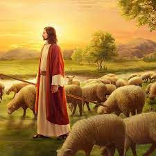
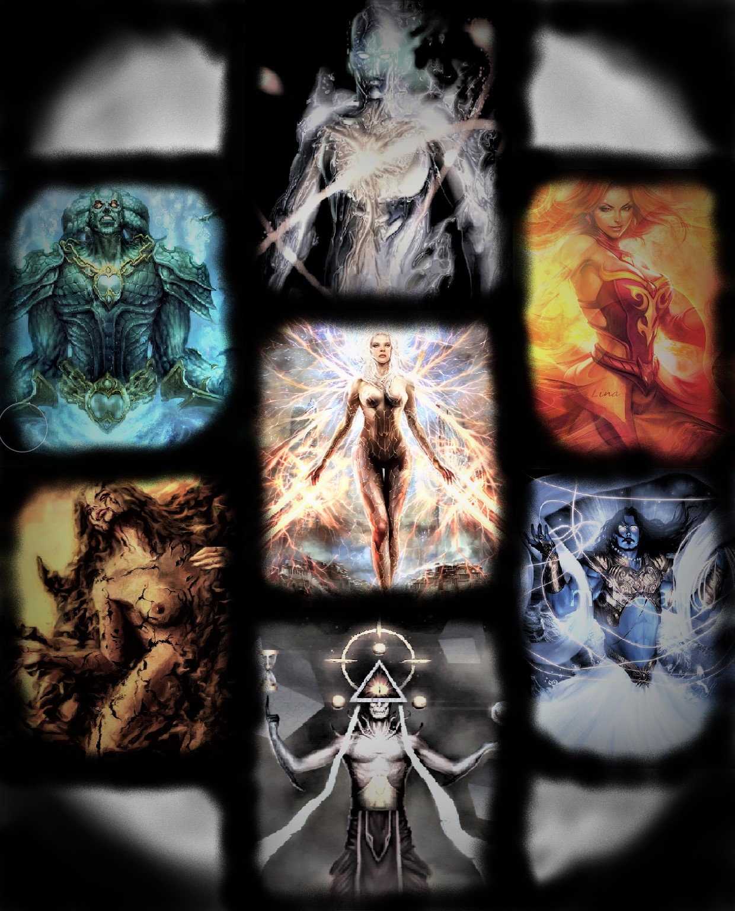

Teoria Creacionista
¿Que es la Creacion?
Creación es un concepto teológico, que aparece casi en todas las religiones,
según el cual el universo habría sido formado por Dios. de esta viene la teoria de
El creacionismo es la creencia religiosa de que el universo y la vida se originaron
«de actos concretos de creación divina».
Durante la Edad Media, y hasta la actualidad, el término «creacionismo» ha servido en Teología para designar
una de dos interpretaciones alternativas para el origen del alma personal, que cada
alma es objeto de un acto especial de creación por Yahvé, siendo su alternativa el traducianismo.
Podemos encontrar al menos tres formas diferentes de representar la creación. Primero,
como ciclo o secuencia, recogiendo los distintos días y sus diferencias (ej. Biblia de San
Pedro de Rodas, s. XI; mosaicos de la Catedral de Monreale, s. XII, Tapiz de la Creación de
Gerona, s. XII). Segundo, sintetizando todo el proceso en la actividad ordenadora de Dios, de
modo que éste aparece como un geómetra o matemático modelando el mundo con un compás
(ej. Biblia de San Luis, Catedral de Toledo, s. XIII). Y tercero, reduciendo la creación al
momento más importante, el sexto día, y más concretamente a las figuras de Adán y Eva, los
primeros padres (ej. pinturas murales de Saint-Savin-sur-Gartempe, ca. 1100; Bestiario de
Aberdeen, ca. 1200).
Cuando se habla de la creacion o "creacionismo" en lo primero que se piensa es en la religion catolica o cristiana protestante,
mas no es especifico de estos, ya que cualquiera que crea en un Dios creador es un creacionista, esta es por mucho la "Teoria"
mas antigua en cuanto al origen de la vida se trata, ya que doferemtes culturas a lo largo de la historia an creido en ya sea uno o
varios dioses de la creacion. Como ejemplo tenemos a los Griegos, Egipcios, Mayas, Aztecas entre otros.
Dioses Creadores`
Yahveh

Yahveh, según el consenso académico, es la pronunciación más probable del tetragrámaton (griego antiguo: Τετραγράμματον, "palabra compuesta de cuatro letras") hebreo יהוה, nombre propio que emplea la Biblia hebrea para designar al Dios único de judíos, samaritanos y cristianos.
Otros dioses Creadores

Si bien Yahveh es el Dios principal de nuestra cultura por asi decirlo, tambien existen otros dioses creadores a lo largo y ancho de nuestro planeta y tambien a lo largo de la historia y diferentes culturas, estos van desde los dioses Mayas, tales como Tepeu y Kukulkán, hasta los relatos indus, griegos y Egipcios sobre lo que fue la creacion
A continuacion se deja una lista con algunos de lis principales dioses Creadores
A
Abudad, Achamán, Aiapæc, Aiapoec, Alá, Ame-no-minaka-nushi-no-kami, Amotken, Aramazd, Areop-Enap, Awonawilona.
B
Brahma
C
Chaotroquin, Chukwu.
D
Demiurgo
E
El (dios semítico), Elohim, Enki.
G
Garbhodakasai Visnú, Gran Arquitecto del Universo, Gundya Tikoa.
H
Huiracocha (dios), Huitzilopochtli.
I
Inti, Izanagi
J
Jnum
K
Kami-musubi-no-kami, Kanno, Kénos, Khonvoum, Kitzihiata, Kon (mitología inca), Kóoch, Krishna, Kuk (mitología), Kukulkán, Kurmá.
M
Mahavisnú, Make-Make, Melek Taus, Meltí ?ipá jalá(u), Michapú, Mulungu.
N
Ngai, Ngenechén, Ninimma, Nueve Viento, Num-Torum.
O
Odín, Olodumare, Ometéotl.
P
Pachacámac, Pangu, Prometeo, Ptah, Púrusha.
Q
Quetzalcóatl
R
Ra (mitología)
S
Shangdi, Sharabha, Sibú,
T
Takami-musubi-no-kami, Talá Yekela, Tangaloa, Temáukel, Tezcatlipoca, Tloque Nahuaque, Toko'yoto, Tonacatecuhtli, Trimurti, Tuastri, Tupã.
U
Unkulunkulu
V
Ve (dios), Vili, Vishnu.
W
Watauinewa, Weywot (mitología), Wintek, Wisakedjak.
X
Xipe Tótec
Y
Yahveh, Yahweh, Yuanshi Tianzun, Yúcahu.
Z
Zurvan